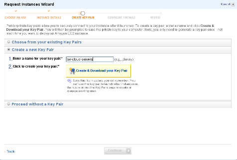
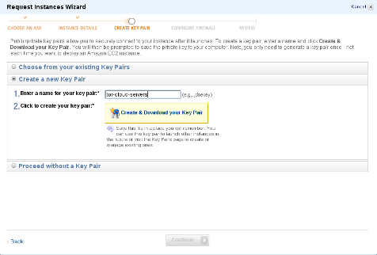

Tor in the Amazon cloud
The Tor Cloud project gives you a user-friendly way of deploying
bridges to help users access an uncensored Internet. By setting up a
bridge, you donate bandwidth to the Tor network and help improve the
safety and speed at which users can access the Internet. Learn more about Tor »
This project runs on the Amazon EC2 cloud computing
platform, which powers Amazon.com and other major websites. Amazon
EC2 allows users to launch their own virtual machines and computing
resources with flexible and cost-effective terms. Learn more about Amazon EC2 »
Setting up a Tor bridge on Amazon EC2 is simple and will only take
you a couple of minutes. The images have been configured with automatic
package updates and port forwarding, so you do not have to worry about
Tor not working or the server not getting security updates.
Get
started with Tor Cloud »
How much does it cost?
To help new customers get started in the cloud, Amazon is
introducing a free usage tier. The Tor Cloud images are all micro
instances, and new customers will be able to run a free micro
instance for a whole year. Please see http://aws.amazon.com/free/ for
details.
Don't qualify for the Free Tier? No problem. The Tor Cloud
images have been configured with a
bandwidth limit. We have estimated
that running a bridge will cost around $30 a month, depending on
the region you put it in. See the Amazon EC2
Pricing page for more information.
Sign up
Before you can set up a bridge, you need to sign up for
an Amazon
Web Services (AWS) account.
Sign Up Now!
Amazon will send you an email once your account has
been activated.
Select a region
The images below are all configured as bridges.
We have estimated
that running a bridge will cost around $30 a month, depending on
the region you put it in. See the Amazon EC2
Pricing page for more information.
Step by step process
After selecting the region, you will be redirected to Amazon's
management console. Simply follow the steps as illustrated below,
and your bridge will up and running in just a couple of
minutes:
Frequently Asked Questions (FAQ)
1. How much does it cost?
There is no fee charged by the Tor Project, Inc for you to run a
Tor Cloud image. Amazon does, however, charge instances
according to their pricing.
We have estimated
that running a bridge will cost around $30 a month.
2. I can't connect as user root, what's wrong?
When you right-click and choose connect, AWS will suggest that
you use root as the username. This is wrong. You need to use
ubuntu as the username if you wish to connect to your server via
SSH.
3. What's in the Tor configuration file?
The Tor configuration file that the images have been
configured with can be found here.
4. Will the images automatically download and install package updates?
Yes, the images have all been configured with the unattended-upgrades package. This means that your system will automatically download and install updates.
5. Will you let me know when you publish new images?
New cloud images will be announced on Twitter, identi.ca, our blog and on the tor-talk mailing list.
6. Where do I report a bug I am encountering?
If you think the bug you have found is specific to the Tor Cloud
images we provide, please file a bug or
send an email to help AT rt.torproject.org.
7. Is there an IRC channel where I can ask about Tor Cloud?
Yes, simply join #tor on irc.oftc.net and ask your question. It may take a while before we get back to you, so please be patient.
8. I have a question that is not answered here, what do I do?
Please send an email to help AT rt.torproject.org.
")
")
") 
